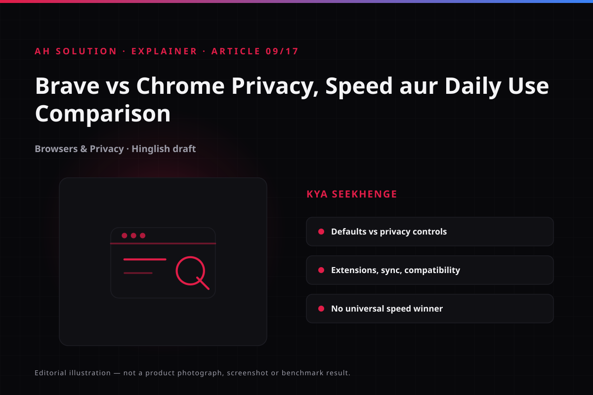

Most of us spend a lot of time online, and every click, search and site visit generates data about us. Privacy now matters as much as speed when picking a browser. Brave and Google Chrome are both Chromium-based, but their defaults, features and approach differ substantially.
This article compares Brave and Chrome across privacy, speed, everyday use, extensions, sync and compatibility. The video is from 2021, but the comparison still applies today, and a decision framework follows at the end.
Original video: Brave vs Chrome 🔥 Which Browser Is Better? | Privacy & Speed Test Video published: 31 March 2021 · Duration: 04:26
1. Understand the base and the approach
Brave and Chrome are built on the Chromium engine, so website compatibility and extension support are largely the same. Sites run on both, but the projects take very different paths.
Chrome focuses on the Google ecosystem and convenience: Gmail, Drive and Docs integrate naturally. Brave is designed privacy-first, blocking trackers, unwanted ads and fingerprinting attempts by default. The goal is more privacy at the default level without extra extensions, while in Chrome most of that configuration has to be done by you — an "opt-out" approach against an "opt-in" one.
2. Privacy comparison — which is safer?
Privacy means more than switching ads off. It depends on how far a browser minimises your browsing patterns and how much access it gives third parties. On this point Brave's default setup is well ahead of Chrome's.
Brave provides Shields, which handles third-party ads, trackers and cookie control by default and adds fingerprinting protection, as Brave's own team explains on the official Shields help page. In Chrome, third-party cookie controls sit on the Chrome cookies settings page. Those defaults keep evolving with the ecosystem, but cross-site tracking is not blocked completely by default.

One point matters here: because Brave is also Chromium-based, it does not make you completely anonymous. If you sync through a Google account or sign in to sites, the same data is still collected. Privacy improves, but there is no 100% anonymity guarantee. Our privacy.html page covers the usual digital hygiene.
3. Speed tests — what is actually true
The video shows a speed test, but declaring a universal speed winner would be wrong. Speed depends on the device, RAM, CPU, network, extensions, cached data and the types of site being loaded.
When ads and trackers are blocked, fewer page requests are made, and Brave can feel faster. If you already run an ad blocker in Chrome, however, the difference may be very small. The effect of tracker blocking is more visible on low-end devices; on high-end hardware it is negligible.
How to run a fair test at home: install both browsers with a fresh, default profile rather than imported settings. Open the five to seven sites you use daily, compare memory and CPU usage in Task Manager, and alternate between the two for two or three days. Do not decide from a single 30-second demonstration.
4. Extensions, sync and compatibility
Because both are Chromium-based, they support most Chrome Web Store extensions. In rarer cases Brave-specific changes or extension detection can interfere, and banking or enterprise portals occasionally treat privacy-focused browsers with extra verification; there is usually a workaround, such as switching Shields off for that site.
Sync is more nuanced. Chrome's Google sync is deeply integrated, so passwords, bookmarks, history and tabs sync seamlessly. Brave runs its own sync system with end-to-end encryption, described in the official Brave sync guide. That suits privacy-conscious users, while anyone heavily invested in the Google ecosystem will find the transition slightly different.
5. Practical aspects of everyday use
In daily use, start with whether you rely on Google services. They integrate naturally in Chrome, and Brave works with them too without any real problem.
The second aspect is resource usage. Because tracker blocking reduces network load, Brave may use less of it and laptop battery life can feel slightly better, though this depends on your usage. Tab management, bookmarks and autofill are solid in both. Features such as Brave Rewards are not relevant to every user and can feel overwhelming if you only want a straightforward browser.
6. Which one to choose — a decision framework
Write down your own priorities and decide on that basis:
| Priority | Recommendation | Reason |
|---|---|---|
| Privacy by default | Brave | More protection without extra setup |
| Google ecosystem | Chrome | Gmail, Drive, Docs integrate seamlessly |
| Already using an ad blocker | Try both | The difference may be small |
| Cross-device sync (Google) | Chrome | Sync with a simple Google sign-in |
| Encrypted sync | Brave | Its own sync system is end-to-end encrypted |
Try both for 1–2 weeks and choose whichever creates the least friction in your workflow. Choosing a browser is not a one-time decision; if your needs change, switch without hesitation.
Troubleshooting and limitations
- Sites break: Shields may be too strict — set it to "Down" from the Shields icon or adjust the settings.
- Extension issues: some extensions behave differently on Brave — update them and try again.
- Sync setup: Brave sync uses device pairing rather than a Google sign-in, so the first setup takes longer.
- Speed expectations: do not expect unrealistic gains — the difference is mostly subtle.
Safety and privacy
- Account security: use a strong password manager and 2FA in either browser.
- Updates: keep the browser updated at all times; security patches matter most.
- Permissions: review site permissions (camera, microphone, location) regularly.
- Data sync: enable sync only once you understand what it will transfer.
Frequently asked questions
Is Brave always faster than Chrome?
No. Speed depends on the device, the network, the sites, the extensions and the settings. Often the difference is small or negligible.
Does Brave make you completely anonymous?
No. Privacy improves at the browser level, but your IP address, signed-in accounts, your network provider and the sites can still track you.
Do Chrome extensions work in Brave?
Most do. Some are platform-specific, and restrictions related to detection bypass can apply.
Is Brave safe to use?
Generally yes — it is a reputable browser that ships regular updates. As with any software, keep an eye on your usage and settings.
Should I switch from Chrome to Brave?
It is worth trying if privacy is a priority and you want more protection without an ad blocker. If you are heavily tied to the Google ecosystem, the transition will not feel smooth.
Does Brave show ads?
Brave's own Rewards system shows opt-in ads, which are not enabled by default. Unwanted ads are rare during normal browsing.
Final recommendations
The fair verdict is that both are good browsers. If privacy is your main concern, try Brave first; if your workflow depends on the Google ecosystem, Chrome may fit better. Test both against your own usage: both are free, so install them, use them for 1–2 weeks and keep the one that feels comfortable.
Resources and official links
- What is Brave Shields — official help — how Brave's own team explains the default protections.
- Brave Sync setup guide — creating a sync chain and adding devices step by step.
- Manage cookies in Chrome — allowing or blocking third-party cookies and site exceptions.
- Brave Help Center — all of Brave's official support articles in one place.
- Google Chrome Help Center — official documentation for Chrome settings, privacy and troubleshooting.